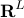
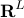

A New CAD Method and Associated Architectures for Linear Controllers
IEEE Transactions on Automatic Control, 33(3):268-283, March 1988.
Shorter version
appeared in Proceedings of the American Control Conference,
pages 611-616, June 1987, and Proceedings Annual Allerton
Conference on Communication, Control and Computing,
pages 889-898, 1986.
A new CAD method and associated architectures are proposed for linear
controllers. The design methods and architecture are based on recent results
which parametrize all controllers which stabilize a given plant. With this
architecture, the design of controllers is a convex programming problem which
can be solved numerically. Constraints on the closed-loop system such as
asymptotic tracking, decoupling, limits on peak excursions of variables, step
responses, setting time, and overshoot, as well as frequency domain
inequalities are readily incorporated in the design. The minimization objective
is quite general, with LQG, , and new  types as special cases. The
constraints and objectives are specified in a control specification language
which is natural for the control engineer, referring directly to step response,
noise powers, transfer functions, and so on. This control specification
language will be the input to a compiler which will translate the
specifications into a standard convex program in , which is then solved by
some numerical convex program solver. A small but powerful subset of the
language has been specified and its associated compiler implemented. The
architecture proposed simplifies not only design of the controller but also its
implementation. These controllers can be built right now from off the shelf
components or integrated using standard VLSI cells.
types as special cases. The
constraints and objectives are specified in a control specification language
which is natural for the control engineer, referring directly to step response,
noise powers, transfer functions, and so on. This control specification
language will be the input to a compiler which will translate the
specifications into a standard convex program in , which is then solved by
some numerical convex program solver. A small but powerful subset of the
language has been specified and its associated compiler implemented. The
architecture proposed simplifies not only design of the controller but also its
implementation. These controllers can be built right now from off the shelf
components or integrated using standard VLSI cells.